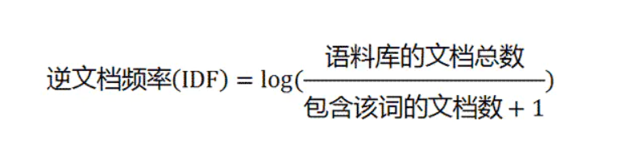
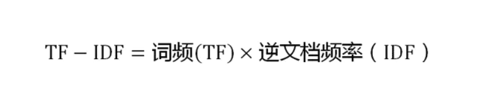

NLP简介
NLP基础
NLP是什么？
自然语言处理（NLP，Natural Language Processing）是研究计算机处理人类语言的一门技术，目的是弥补人类交流（自然语言）和计算机理解（机器语言）之间的差距。NLP包含句法语义分析、信息抽取、文本挖掘、机器翻译、信息检索、问答系统和对话系统等领域。
NLP相关知识的构成
分词（segment）：词是最小的能够独立活动的有意义的语言成分。
词性标注（part-of-speech tagging）：基于机器学习的方法里，往往需要对词的词性进行标注。词性一般是指动词、名词、形容词等。标注的目的是表征词的一种隐藏状态，隐藏状态构成的转移就构成了状态转移序列
命名实体识别（NER，Named Entity Recognition）：命名实体是指从文本中识别具有特定类别的实体（通常是名词），例如人名、地名、机构名、专有名词等。
指代消解（anaphora resolution）：中文中代词出现的频率很高，它的作用的是用来表征前文出现过的人名、地名等。
NLP常用算法(1)
人工智能算法大体上来说可以分类两类：基于统计的机器学习算法(Machine Learning)和深度学习算法(Deep Learning)
回归算法
- LR (Linear Regression，线性回归)
- SVR (支持向量机回归)
- RR (Ridge Regression，岭回归，L2正则化)
- Lasso Regression，L1正则化
分类算法
- LR (Logistic Regression，逻辑回归又叫逻辑分类)
- SVM (Support Vector Machine，支持向量机)
- NB (Naive Bayes，朴素贝叶斯)
- DT (Decision Tree，决策树)
KNN (k-Nearest Neighbors，K近邻算法)
1).C4.5
- 2).ID3
3).CART
集成算法
1).Bagging
- 2).Random Forest (随机森林)
- 3).GB(梯度提升,Gradient boosting)
- 4).GBDT (Gradient Boosting Decision Tree)
- 5).AdaBoost
6).Xgboost
最大熵模型
聚类算法
- Kmeans 算法（优缺点与改进）
- 层次聚类
- 密度聚类
- 网格聚类
- 模型聚类 GMM
降维算法
- PCA 主成分分析
- LDA 线性判别分析
概率图模型算法
- 贝叶斯网络
- HMM
- CRF (条件随机场)
文本挖掘算法
模型
1).LDA (主题生成模型，Latent Dirichlet Allocation)
2).最大熵模型(其实是个多分类模型，归这里不一定合适)
关键词提取
1).tf-idf
- 2).bm25
- 3).textrank
- 4).pagerank
- 5).左右熵 :左右熵高的作为关键词
6).互信息
词法分析
1).分词 – ①HMM (因马尔科夫) – ②CRF (条件随机场)
- 2).词性标注
3).命名实体识别
句法分析
1).句法结构分析
2).依存句法分析
文本向量化
1).tf-idf
- 2).word2vec
- 3).doc2vec
4).cw2vec
距离计算
1).欧氏距离
- 2).相似度计算
深度学习算法
(1).BP (2).CNN (3).DNN (3).RNN、LSTM、GRU (4).Seq2Seq (5).[Attention、Transformer、BERT
建模方面
模型优化·
- (1).特征选择
- (2).梯度下降 SGD系列
- (3).交叉验证
- (4).参数调优
- (5).模型评估：准确率、召回率、F1、AUC、ROC、损失函数
数据预处理
- (1).标准化
- (2).异常值处理
- (3).二值化
- (4).缺失值填充： 支持均值、中位数、特定值补差、多重插补
- (5).不平衡样本处理（降采样，过采样）
TF-IDF算法
停用词："的"、"是"、"在"----这一类最常用的词。它们叫做"停用词"（stop words），表示对找到结果毫无帮助、必须过滤掉的词
TF："词频"（Term Frequency）：某个词在文章中出现的次数
IDF："逆文档频率"（Inverse Document Frequency）：它的大小与一个词的常见程度成反比。如果一个词越常见，那么分母就越大，逆文档频率就越小越接近0。分母之所以要加1，是为了避免分母为0（即所有文档都不包含该词）。

TF-IDF
TF-IDF与一个词在文档中的出现次数成正比，与该词在整个语言（语料库）中的出现次数成反比。所以，自动提取关键词的算法就很清楚了，就是计算出文档的每个词的TF-IDF值，然后按降序排列，取排在最前面的几个词。

TF-IDF算法
- 优点是简单快速，结果比较符合实际情况。
- 缺点是，单纯以"词频"衡量一个词的重要性，不够全面，有时重要的词可能出现次数并不多。而且，这种算法无法体现词的位置信息，出现位置靠前的词与出现位置靠后的词，都被视为重要性相同，这是不正确的。
余弦相似性
有些时候，除了找到关键词，我们还希望找到与原文章相似的其他文章。为了找出相似的文章，需要用到"余弦相似性"（cosine similiarity）
- 第一步，分词。
句子A：我/喜欢/看/电视，不/喜欢/看/电影。 句子B：我/不/喜欢/看/电视，也/不/喜欢/看/电影。
- 第二步，列出所有的词。
我，喜欢，看，电视，电影，不，也。
- 第三步，计算词频。
句子A：我 1，喜欢 2，看 2，电视 1，电影 1，不 1，也 0。 句子B：我 1，喜欢 2，看 2，电视 1，电影 1，不 2，也 1。
- 第四步，写出词频向量。
句子A：[1, 2, 2, 1, 1, 1, 0] 句子B：[1, 2, 2, 1, 1, 2, 1]
- 第五步：计算两个向量的相似程度


Kmeans聚类
聚类VS分类
分类：类别是已知的，通过对已知分类的数据进行训练和学习，找到这些不同类的特征，再对未分类的数据进行分类。属于监督学习。
聚类：事先不知道数据会分为几类，通过聚类分析将数据聚合成几个群体。聚类不需要对数据进行训练和学习。属于无监督学习。
K-means聚类基本概率
K-Means 聚类算法属于无监督学习方法。K表示类别数，Means表示均值，K一般由人工来指定，或通过层次聚类(Hierarchical Clustering)的方法获得数据的类别数量作为选择K值的参考。选择较大的K可以降低数据的误差，但会增加过拟合的风险。
- 聚类（Clustering）：K-Means 是一种聚类分析（Cluster Analysis）方法。聚类就是将数据对象分组成为多个类或者簇 (Cluster)，使得在同一个簇中的对象之间具有较高的相似度，而不同簇中的对象差别较大。
- 划分（Partitioning）：聚类可以基于划分，也可以基于分层。划分即将对象划分成不同的簇，而分层是将对象分等级。
- 排他（Exclusive）：对于一个数据对象，只能被划分到一个簇中。如果一个数据对象可以被划分到多个簇中，则称为可重叠的（Overlapping）。
- 距离（Distance）：基于距离的聚类是将距离近的相似的对象聚在一起。基于概率分布模型的聚类是在一组对象中，找到能符合特定分布模型的对象的集合，他们不一定是距离最近的或者最相似的，而是能完美的呈现出概率分布模型所描述的模型。
算法思路如下：
- 首先输入 k 的值，即我们指定希望通过聚类得到 k 个分组；
- 从数据集中随机选取 k 个数据点作为初始质心；
- 对集合中每一个样本点，计算与每一个初始质心的距离，离哪个初始质心距离近，就属于那个类。
- 按距离对所有样本分完组之后，计算每个组的均值（最简单的方法就是求样本每个维度的平均值），作为新的质心。
- 重复（2）（3）（4）直到新的质心和原质心相等，算法结束。
优点
- 是解决聚类问题的一种经典算法，简单、快速。
- 对处理大数据集，该算法保持可伸缩性和高效率。
- 当结果簇是密集的，它的效果较好。
缺点
- 在簇的平均值可被定义的情况下才能使用，可能不适用于某些应用。
- 必须事先给出k（要生成的簇的数目），而且对初值敏感，对于不同的初始值，可能会导致不同结果。
- 不适合于发现非凸形状的簇或者大小差别很大的簇。
- 对躁声和孤立点数据敏感
C-value算法
C-value、D-value这两个算法都是用于术语抽取。
C-value方法的基本思想是先用语言规则得到候选术语集，然后使用统计信息来进行过滤。
D-value算法
D-Value方法是一种基于术语词频分布变化统计